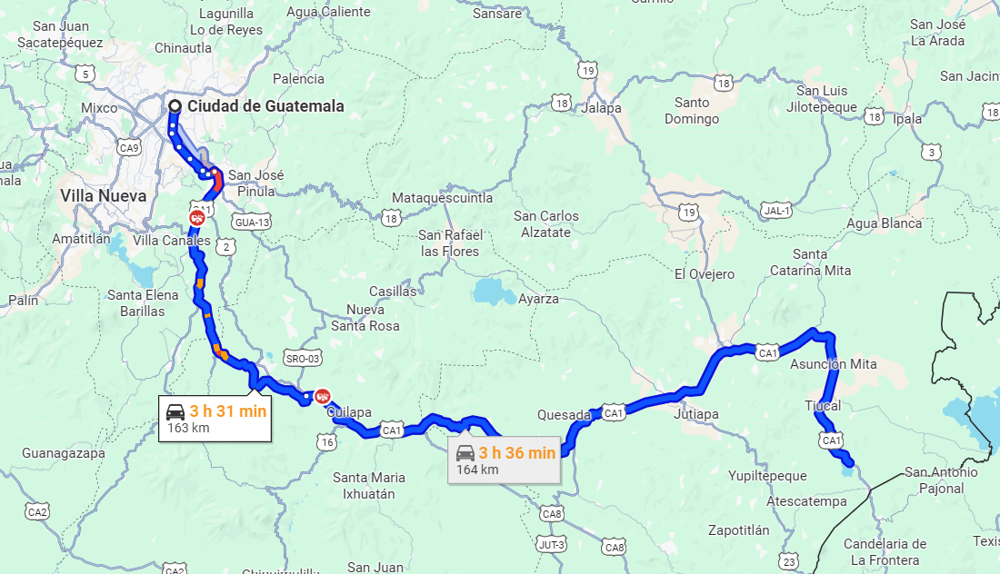

El lago de atescatempa se encuentra en el municipio de Atescatempa, departamento de Jutiapa. Es reconocido como uno de los espejos de agua natural rodeado de colinas verdes permitiendo ofrecer un ambiente tranquilo para las personas que lo visitan y puedan relajarse con su naturalesa.
Debido al carácter cambiante de sus orillas, no se conoce su extensión exacta. Se sabe que solía medir aproximadamente 5.6 kilómetros cuadrados, pero luego comenzó a extinguirse. Los ríos que desembocan en la laguna son el Atescatempa y El Amatal. Las lagunas dentro del departamento son usadas frecuentemente por los agricultores de café.
Se cree que en esta laguna existe un agujero que no se ha encontrado, ya que en el verano la laguna se seca y los agricultores aprovechan la tierra humeda para sembrar sandias y en el invierno se vuelve a llenar, se especula entre los vecinos que el agua se esconde en el Cerro de las Víboras.
El itinerario para el viaje hacia la laguna de atescatempa y puedas disfrutar un fin de semana completo con tu familia o amigos es:
| Horario | Actividad | Lugar |
|---|---|---|
| 08:00 - 10:00 | Salida desde la ciudad capital | Ciudad de Guatemala |
| 13:00 - 14:00 | Almuerzo campestre | Restaurante local en Atescatempa |
| 14:00 - 16:00 | Paseo en lancha por la laguna | Laguna Atescatempa |
| 16:00 - 18:00 | Observación de aves y atardecer | Mirador natural |
| 09:00 - 11:00 | Tour ecológico y senderismo | Alrededores de la laguna |
| 11:00 - 13:00 | Tiempo libre y regreso | Atescatempa |
La duración del viaje desde la ciudad capital hasta la laguna de atescatempa dura aproximadamente 3 horas con 31 minutos, es un viaje y destino para las personas que les encanta viajar por carretera.
